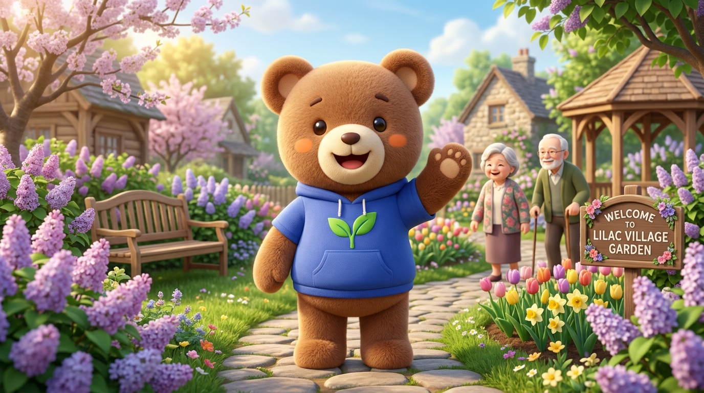

🌸
🌸
🌸
“어르신, 보리와 함께 꽃을 심어볼까요? 작지만 큰 행복을 함께 키워봐요. 좋은 기억이 언제나 피어납니다. 🌸”
라일락 화분에 예쁜 꽃을 피워보아요!
아래 도구를 차례대로 콕 눌러 물을 줘보세요.
🪴
영양 가득한 흙 화분이 준비되었어요

“어르신, 보리와 함께 꽃을 심어볼까요? 작지만 큰 행복을 함께 키워봐요. 좋은 기억이 언제나 피어납니다. 🌸”
아래 도구를 차례대로 콕 눌러 물을 줘보세요.